Early in New Zealand's settlement by the Europeans the country was divided into regions. Initially the idea was for provincial self-government with an overarching nationally based government — like the states of America or the Australian states. The experiment was short-lived; within 30 years the provinces were abolished in favour of full central government. The provincial identity however did not disappear and remains strong to this day.
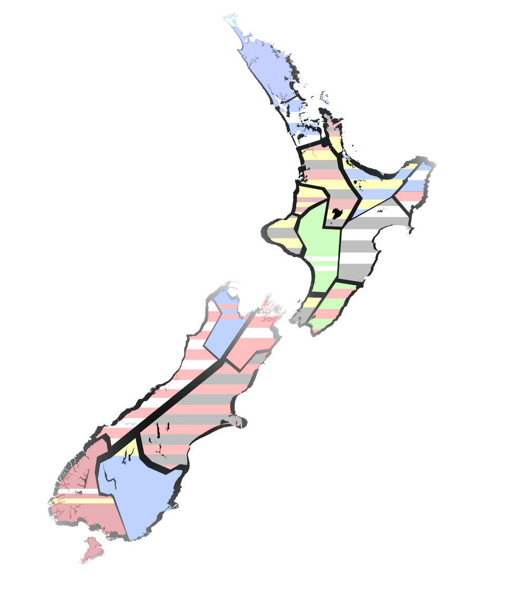
Select a region above to explore
North Island — Far North
Northland
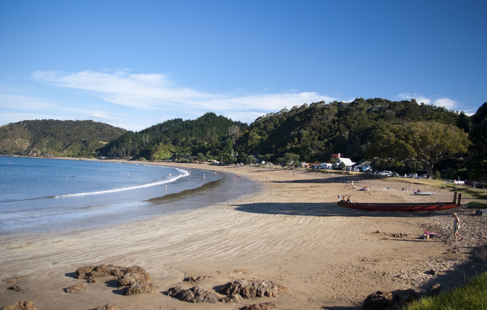
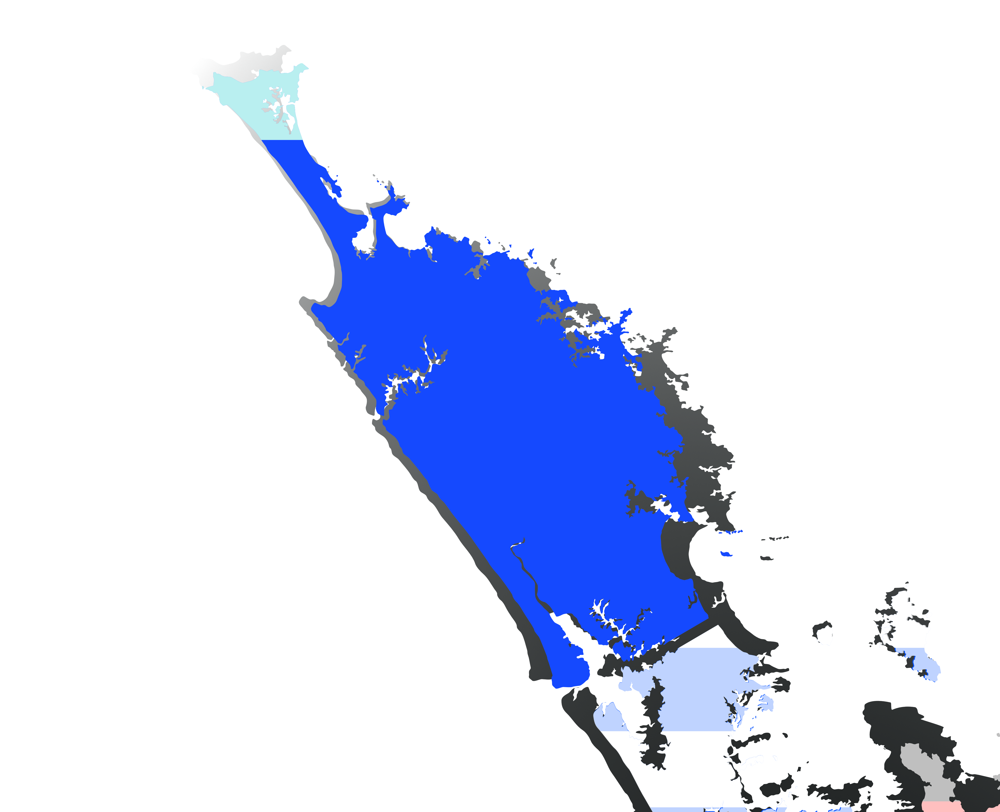
The province extending from Auckland to the northern tip of the country. Often referred to as the winterless north due to its consistently warm climate. The pre-European Māori settlement of the country was driven by available resources and climate — even today Māori settlement is more dense in Northland, graduating to the sparseness of Southland.
Some of New Zealand's most defining race-relation moments in history happened here:
▸ The Treaty of Waitangi was signed
▸ Māori chief Hone Heke protested by cutting down the flagpole
▸ New Zealand's first capital was established
▸ The first major trading town was founded
▸ Early New Zealand Wars battles took place
▸ The Rainbow Warrior was scuttled
▸ The Māori land rights march to Parliament began here
Natural Treasures
Waipoua Forest on the West Coast is home to Tāne Mahuta — the largest tree by volume in the Southern Hemisphere. Cape Reinga is the last place a Māori spirit sees of Aotearoa on its journey home.
New Zealand has three major tourist destinations: Rotorua, Queenstown, and Paihia (Bay of Islands) in the mid-eastern Northland — home to stunning golden beaches and deep cultural history.
Cape Reinga is the northernmost tip of the country and to Māori a very spiritual place. Take one of the tours — the beach with its desert appearance and massive sand dunes is a surprising sight after the green farmland you've been travelling through.
North Island — Upper North
Auckland
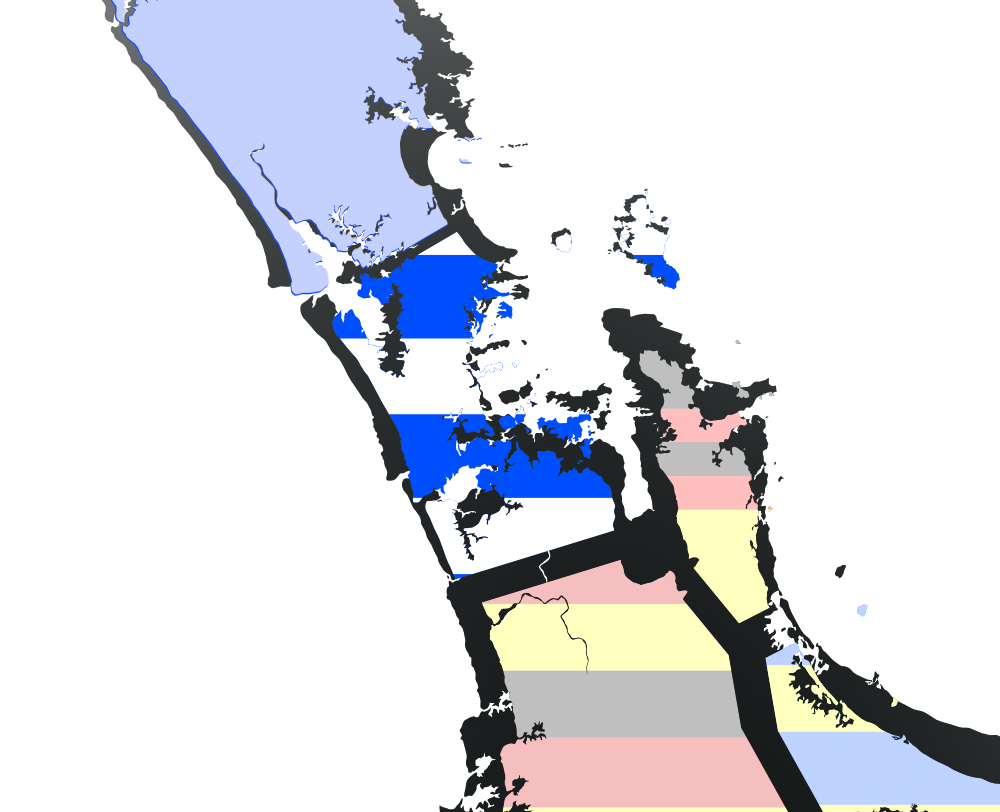
Auckland region is predominantly a city built on 53 volcanic sites, many of which are easily visible as you drive around. Not all are elevated — some have formed the harbours the city uses for recreation.
Auckland is the economic capital of New Zealand and one of the largest cities geographically per capita. It is home to a large Polynesian population and is considered the largest Polynesian city in the world.
Urban & Wild
To the west, the Waitakere Range is covered in lush native bush and home to strong west coast surf. The eastern meandering coast is sheltered with white sands and gentle seas.
Best Activity in Auckland
Walk or take a bus and climb one of the volcanos. Mt Eden is the closest to the city — One Tree Hill a little further out — both accessible and offering great views over the city and harbours.
North Island — Central West
Waikato
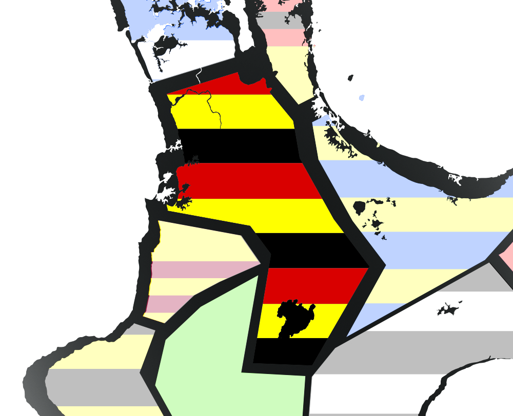
Heading south, Waikato is where the real New Zealand starts. The Bombay Hills mark the northern boundary, the Mokau River the south, and the Kaimai Range to the east. The essence of the region is in its name — wai meaning water, kato meaning the pull of water to the sea.
The Waikato River
New Zealand's longest river, running from Lake Taupō to Port Waikato. Just north of Taupō it's forced through a rocky canyon over the Huka Falls — 220 cubic metres per second make it an unmissable spectacle.
The Aratiatia Dam — the first of eight hydro-electric dams on the river — offers one of the most spectacular sights in the country when the floodgates open. You'll see the canyon transform from a gentle stream to a thundering flood in minutes.
Hobbiton
Matamata has reinvented itself as Hobbiton. A short drive from town is where Peter Jackson filmed the Hobbit village scenes for Lord of the Rings and The Hobbit. Tours run daily.
The southern landscape is either native bush or commercial forestry; to the north, mainly dairy farms. The Waikato includes the Central Plateau and the mountains Tongariro, Ngāruahoe and Ruapehu — the North Island's highest volcano.
North Island — Central West
King Country
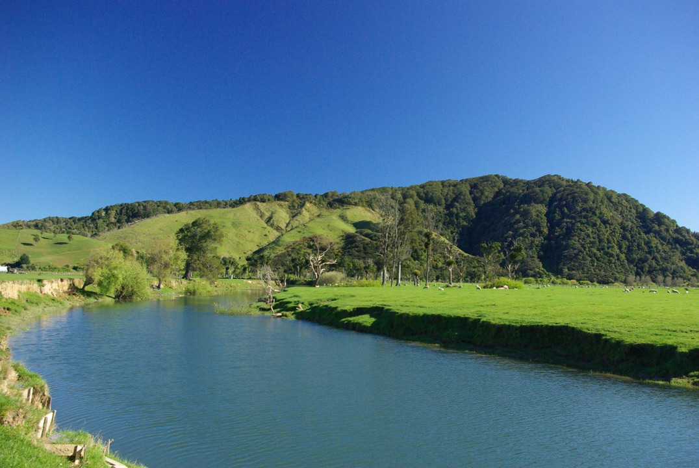
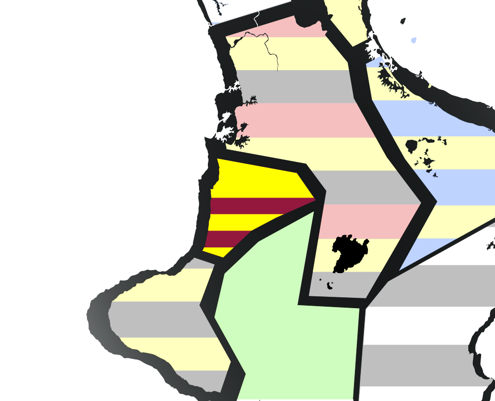
The King Country is the area largely unwanted by early Europeans due to its steep, bush-clad hills. When King Tāwhiao retreated into friendly territory owned by the Ngāti Maniapoto, part of the peace agreement was that European settlers wouldn't enter — which is how the region got its name.
A stunning combination of roads and dramatic landscapes, including one of the most stunning coastal roads in the country — the King Country is a rich visual feast.
Must See
The region is home to one of New Zealand's most famous attractions — the Waitomo Caves. Glowworms illuminate the underground cave systems in a sight unlike anywhere else on earth.
The region's economy is largely farming-based — dairy to the north, sheep and beef more to the south and central. Tourism around Waitomo adds a strong second pillar.
North Island — East Coast
Thames Valley (Coromandel)
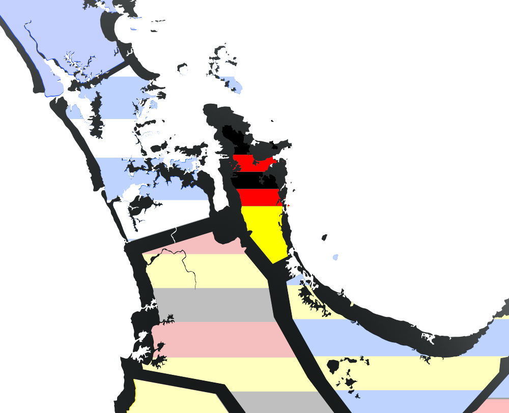
The peninsula acquired its name from HMS Coromandel, a sailing ship that came to the area in search of kauri timber for the Royal Navy. The Coromandel Peninsula extends north from Thames and Waihi, its central mountain spine acting like a giant breakwater creating the tranquil Hauraki Gulf to its west.
Often just called "the Coromandel," this is the Kiwi's summer beach holiday playground — golden beaches, surf beaches, protected calm bays, hot pools, walking tracks, lush bush, and small quiet towns.
Coromandel Gold
The local saying "there's still a lot of gold in them there hills" has a few meanings depending on your definition. Coromandel Gold could mean: locally grown marijuana (a commune hangover from the 1970s), an annual music festival, or of course — actual gold.
⚠ Do not leave walking tracks or walk across paddocks in this region. The landscape is like Swiss cheese with old mines — many covered by thin layers of grass or dirt. Falling through does happen.
North Island — East Coast
Bay of Plenty
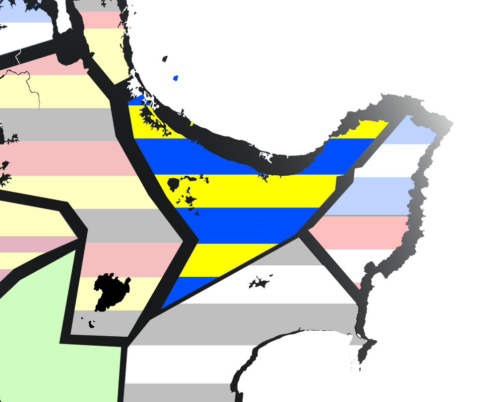
The Bay of Plenty stretches from Tauranga in the west to Cape Runaway in the east. It includes most of New Zealand's geothermal attractions and is home to some of the most famous Māori cultural shows in the country.
The region is triangular — nestled between its bordering ranges. Rotorua sits in a large caldera, and the region is very slowly getting wider as the tectonic plates move apart. Tauranga and Cape Runaway are literally moving further from each other!
How It Got Its Name
Captain Cook named the bay after leaving Gisborne (where he'd had a difficult time getting supplies). The Māori of this bay were far more welcoming and his ship was easily restocked — hence the name.
North Island — Central
Taupo & National Park
Although Taupō and National Park districts are technically part of the Waikato province, they deserve their own recognition. Combined, they make up roughly half of the adventure playgrounds of the North Island.
The Tongariro Crossing
A one-day, one-way walk that crosses from one side of Tongariro to the other. It holds claim to being the most accessible alpine crossing in the world — a moderate walk through volcanic landscapes that is utterly unforgettable.
Māori Royalty
Ngāruawāhia is home to Māori royalty. Access to the royal marae is restricted, but the Waikato has a very strong Māori culture evident throughout — in carvings and pā sites as you travel.
North Island — East Cape
East Coast / Poverty Bay
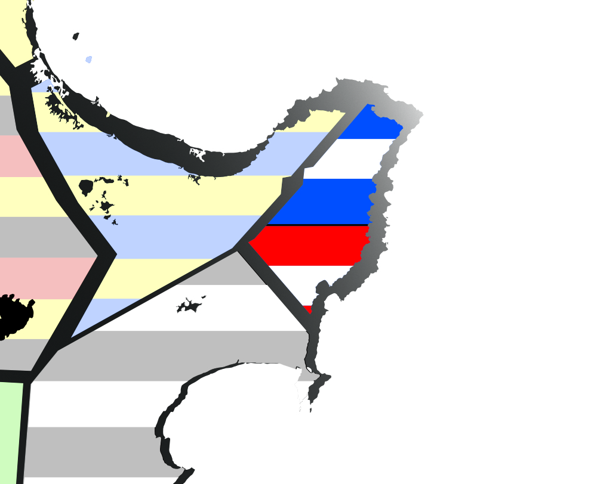
The prominent easternmost peninsula in New Zealand sits east of Whakatāne and north of Hawke's Bay. For travellers with time, the East Cape is richly rewarding — beautiful vistas, a strong living Māori culture, and a pace of life that feels different from the rest of the country.
There is a good chance you will find locals travelling by horse. Don't worry — all the mod cons are there.
First Light
The East Cape is the first place in the world to see the sun each day — and the first to usher in each new millennium. The combination of Te Urewera's rugged hills and its largely untouched beaches make it genuinely special.
What is now the Port of Gisborne is where Captain James Cook first landed on New Zealand soil in 1769. With the benefit of hindsight and Māori history now given its rightful place — this is the beginning of a conversation, not a celebration.
Be conscious on State Highway 35 — behind every corner could be a stock truck or a log truck. And be aware that roads in this region may still be rebuilding after the devastating Cyclone Gabrielle in February 2023.
North Island — East Coast
Hawkes Bay
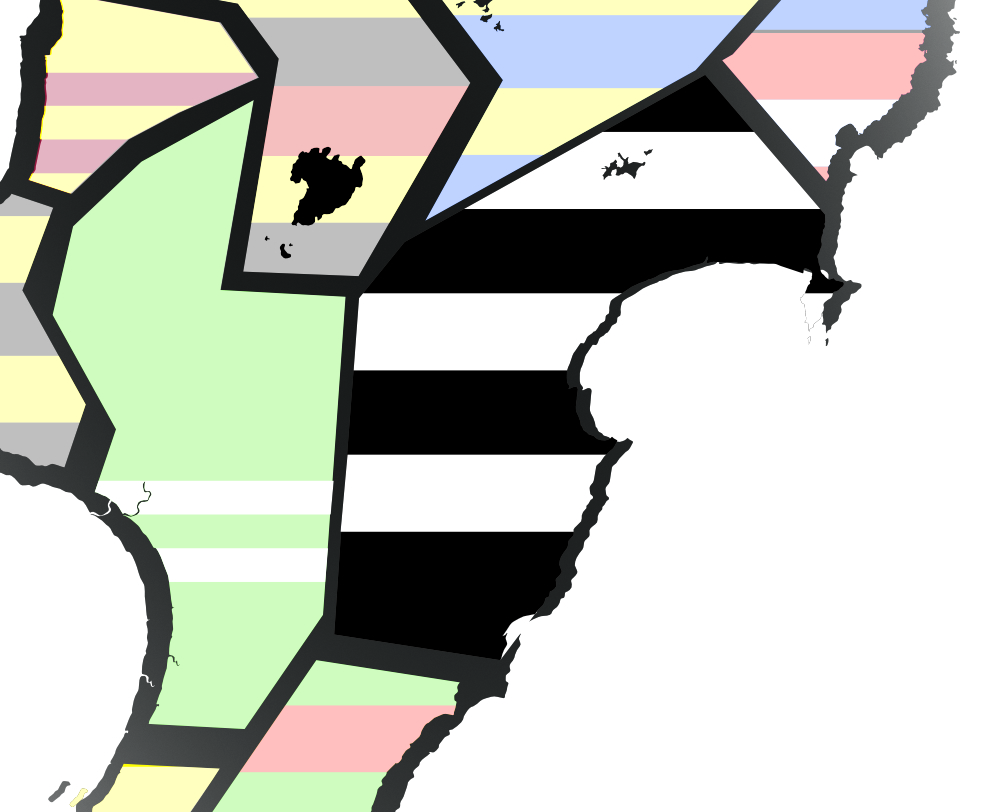
The province stretching from just south of Woodville and the Kaweka Ranges to just north of the Māhia Peninsula. Named by Captain Cook in 1779 in honour of Sir Edward Hawke, First Lord of the Admiralty.
▸ Notorious for sunshine — one of the warmest, sunniest regions in the North Island
▸ The second largest wine region in New Zealand
▸ Home to Napier — Art Deco Capital of the World
▸ Home to the longest place name in any English-speaking country (Taumata…)
Cyclone Gabrielle — February 2023
The most financially damaging natural disaster in New Zealand's history — costing NZ$13.5 billion. Wineries and vineyards are rebuilding, orchards replanting, and roads reconnected — but the scars remain visible across the landscape.
⚠ The ocean here is not safe for swimming. Always swim between the flags — no flags means don't swim.
North Island — West Coast
Taranaki
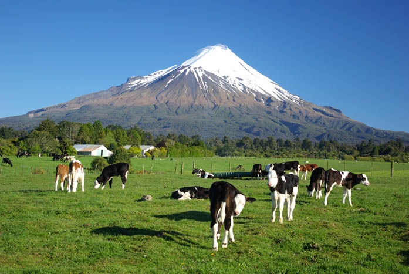
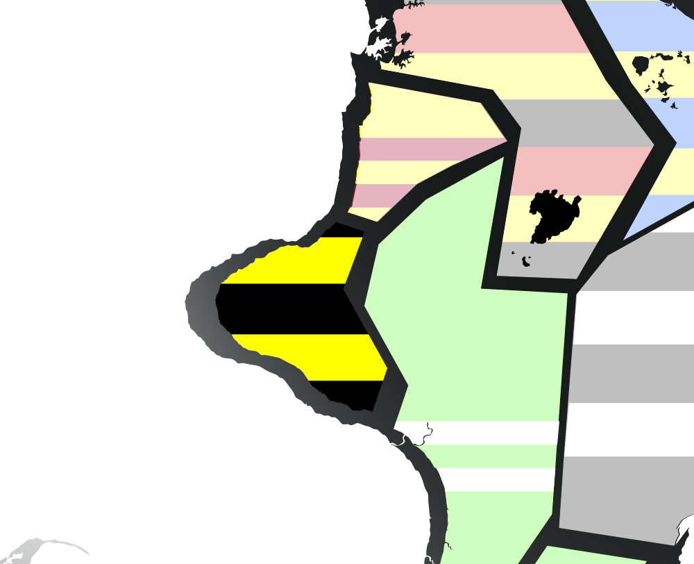
When looking at a map of the North Island, Taranaki is the thumb poking out the left-hand side. Extending from the Mokau River to Nukumaru, it is a province often overlooked by tourists. There are only three roads in or out — two of which traverse difficult terrain.
The Energy Province
The province nicknamed itself in the 1980s as 'The Energy Province' because of its oil and gas reserves. The Maui oil/gas field offshore of Ōpunake was the largest find of its type in the world at the time. The first oil found in New Zealand was at Ngāmotu Beach in New Plymouth in 1865.
Taranaki is the second largest dairy province in the country. It has a long history of surf tourism and mountaineering, and is rich in contemporary Māori culture — with earthworks showing traditional pā layouts and wharetupuna dotting the countryside.
Mt Taranaki
The most accessible mountain in the country — and the most dangerous. An isolated conical peak susceptible to sudden, dramatic weather changes. In good conditions it can be summited as a day hike. If there is any snow or ice and you don't have mountain experience: go with a guide. This mountain regularly kills people.
The mountain has two official names — Mt Taranaki and Mt Egmont. The name Taranaki was returned to the mountain in a gesture of goodwill by the Government when the land was officially returned to local Māori. Tara means peak; naki is believed to be a misspelling of ngaki, meaning clear of vegetation.
North Island — Central West
Whanganui / Manawatu
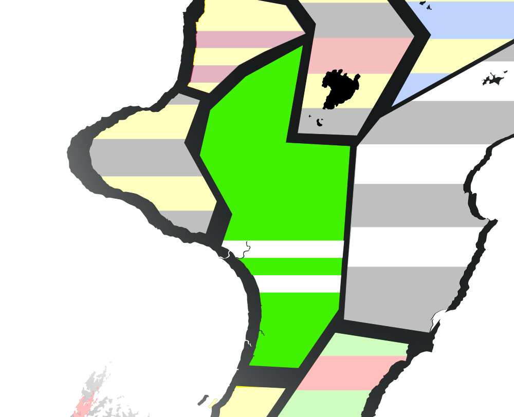
One of the North Island's largest provincial regions — from Ruapehu in the north to Levin in the south, the Tasman Sea to the west and ranges to the east. The region contains several mountain ranges as well as the large coastal Manawatu plain.
Massey University
Palmerston North's main industry is Massey University — the largest university in the country. Its agricultural research has been incredibly valuable locally and worldwide. New Zealand's unique practice of keeping all livestock outdoors year-round has driven a world-class research industry.
In the middle of the Rangitīkei Valley is the famous town of Taihape — made famous by comedian John Clarke's character Fred Dagg, who had a farm "somewhere near Taihape." Now home to the annual Gumboot Throwing Championships.
New Zealand Farm Dogs
As you travel this region keep a keen eye out — you may see working farm dogs in action. Huntaways drive stock away from you with bark. Eye dogs move sheep silently with presence. Backing dogs run across the backs of sheep in pens to get them moving. Each has a specific, essential job.
North Island — South East
Wairarapa
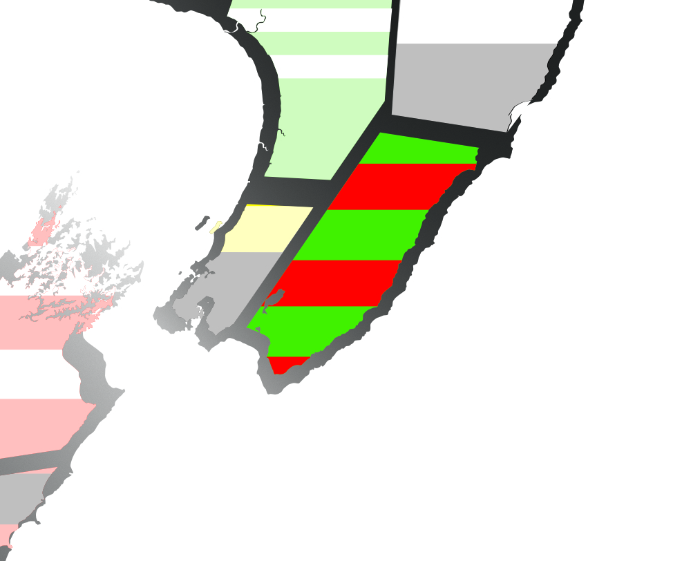
Wai — water. Rarapa — glistening waters. In reference to the waters of Lake Wairarapa near Masterton.
Surrounded on all sides by ranges, the large plains provided early European settlers access to easy farming land — making it New Zealand's oldest European-settled region. Towns like Masterton quickly grew and the region has a very strong farming identity.
▸ One of New Zealand's prime wine regions — dry summers and moderate climate
▸ Mount Bruce Wildlife Centre — kiwi and tuatara enclosures north of Masterton
▸ The Tui Brewery at Mangatainoka — a famous New Zealand landmark
North Island — Southern Tip
Wellington Region
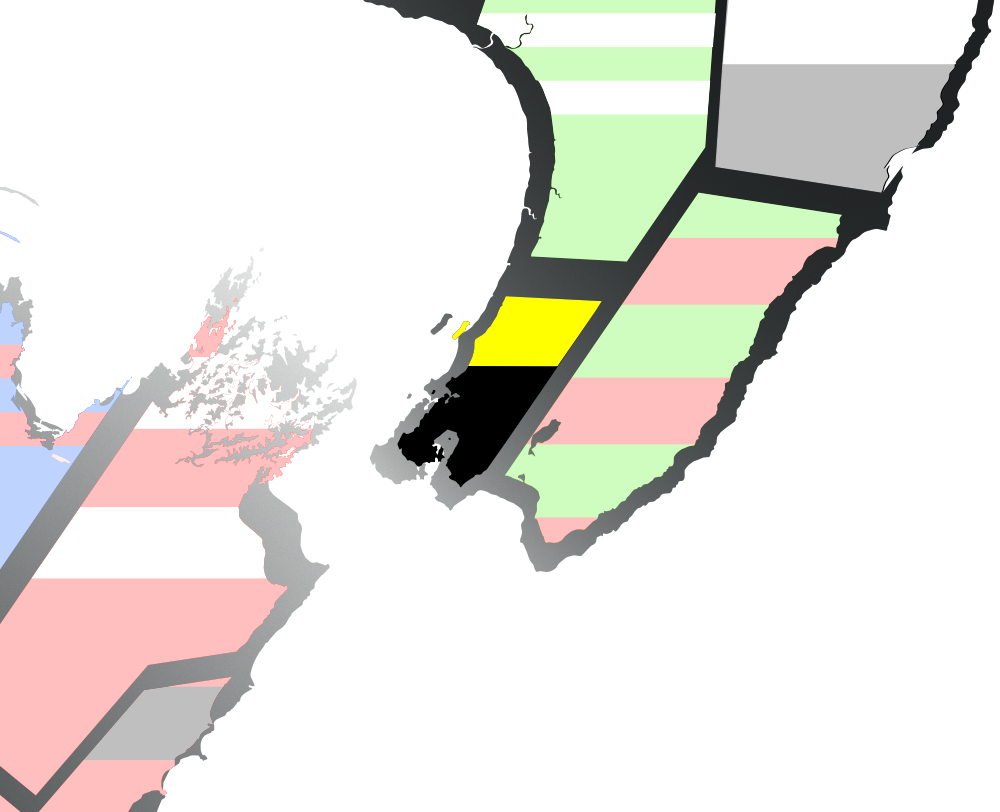
Geographically Wellington Region sits at the bottom of the North Island, next to some dominating geological structures. The Tararua, Akatarawa and Rimutaka ranges break the region into thirds like a narrow Mercedes logo — Kāpiti Coast to the west, Wellington and Hutt Cities wedged in the bottom, the lower Wairarapa to the east.
Built on Fault Lines
The three ranges are the by-product of twisting tectonic plates — where the Indo-Australian plate sliding under the Pacific plate transitions to the reverse. Multiple fault lines run through the region and their movement dominates the landscape.
The region has a richness in culture — both Māori and Pākehā. Wellington is New Zealand's capital city and the cultural heart of the country, home to Te Papa national museum, the national theatre, and a thriving café and arts scene.
South Island — Top of the South
Tasman & Nelson
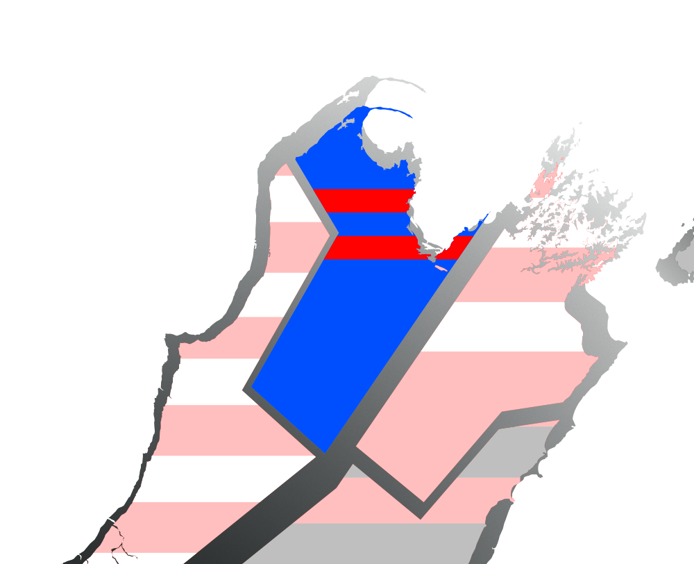
These two regions are home to Nelson City, Abel Tasman National Park, and the Kahurangi National Park. The regions enjoy a warm, sunny climate that makes it easy to relax and enjoy the surrounding opportunities.
Walking Tracks
From the maze of walks in the Abel Tasman National Park to the Heaphy Track in Kahurangi — the longest of all DOC walks. Starting on the West Coast north of Karamea and finishing near Collingwood, the Heaphy is described as a 6-day walk suitable for fit and well-equipped people.
▸ Kahurangi National Park — New Zealand's 2nd largest, created in 1996
▸ Sea kayaking, skydiving, cycling, wineries and a brewery
▸ The area was once home to New Zealand's tobacco industry — barn remnants dot the landscape
South Island — Top of the South
Marlborough
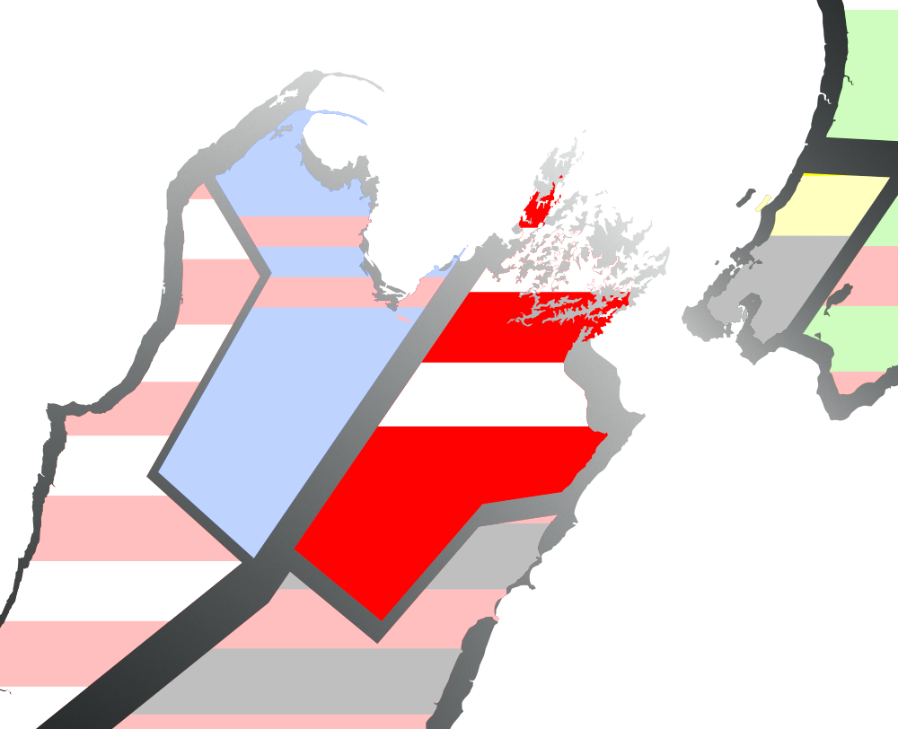
The north-eastern province of the South Island, boxed in between hills to the south and west and the Cook Strait to the north. The hills soak up the prevailing westerly rain and channel the runoff into the streams and shallow water table that flow through the Blenheim valley — creating ideal wine-growing conditions.
New Zealand's Largest Wine Region
The long sunny days and warm climate make Marlborough the country's largest wine-producing region. Wine tours are available from both Picton and Blenheim — bus, self-drive and cycle tours all available.
Green-Lipped Mussels
Wine is not actually the region's highest-grossing income — green-lipped mussels are. The mussel industry based out of Havelock in the Marlborough Sounds is one of the largest mussel-producing operations in the country.
The region is also famed for the Queen Charlotte Walkway — following the ridgeline west of Queen Charlotte Sound, the same route the Picton ferry takes.
South Island — West
West Coast
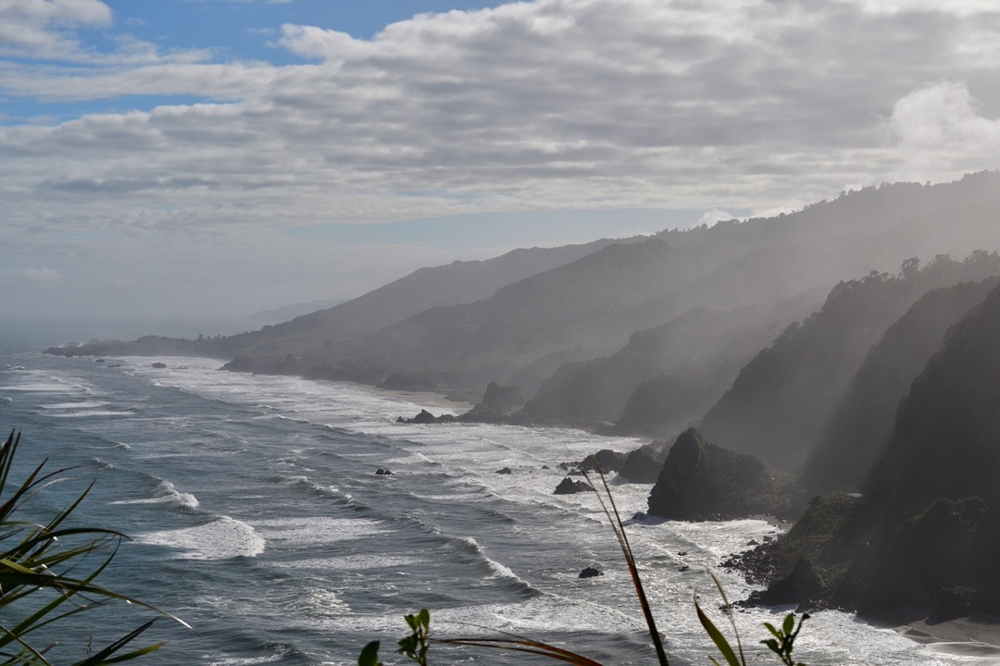
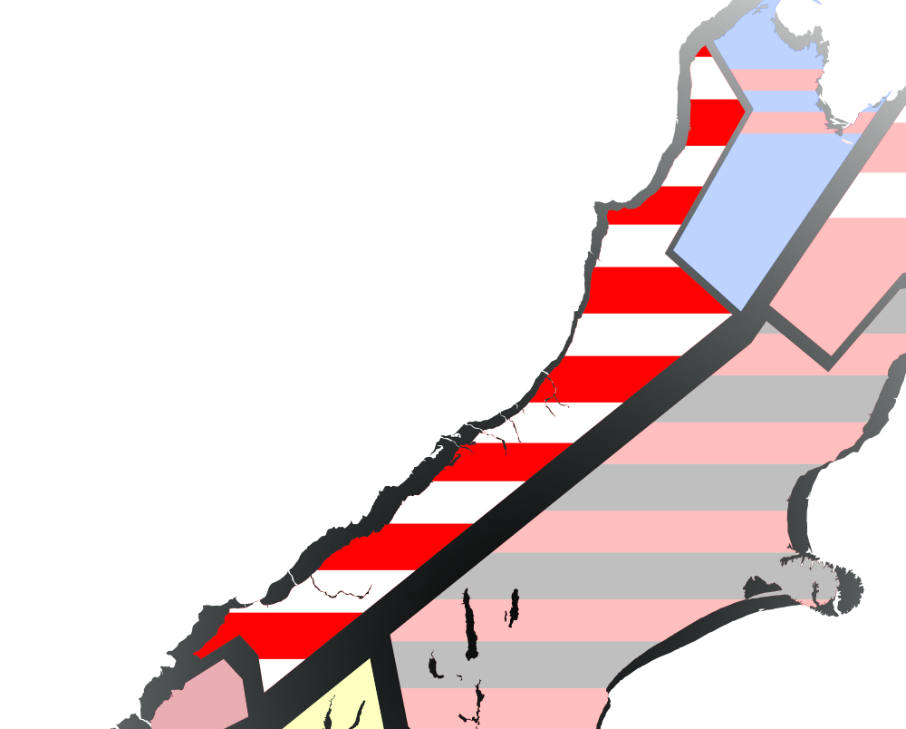
The West Coast — often just called "the Coast" — is a long, narrow region following the west coast from Karamea to Big Bay south of Haast, its eastern border the Southern Alps. Due to silting harbours, rugged seas and harsh mountains, the coast became one of the mythical areas of the country.
It doesn't take much imagination to work out why the West Coast earned its nickname of "the Wet Coast." The highest annual rainfall recorded was at Cropp Creek — 16 metres in a single calendar year.
Labour Roots
In 1908 in the town of Blackball, seven coal miners went on strike to extend their lunch break from 15 minutes to 30. The subsequent show of unity created the 'Red Feds' and eventually the New Zealand Labour Party — born in the mines of the West Coast.
The geography here is the result of two massive tectonic plates pushing past each other — the rock squeezed and crushed, creating ideal conditions for coal and pounamu (jade), both plentiful in the region.
▸ The Buller River — 169km, the largest river in the South Island
▸ White water rafting, mountain climbing, glacier hiking and shopping
South Island — East Central
Canterbury
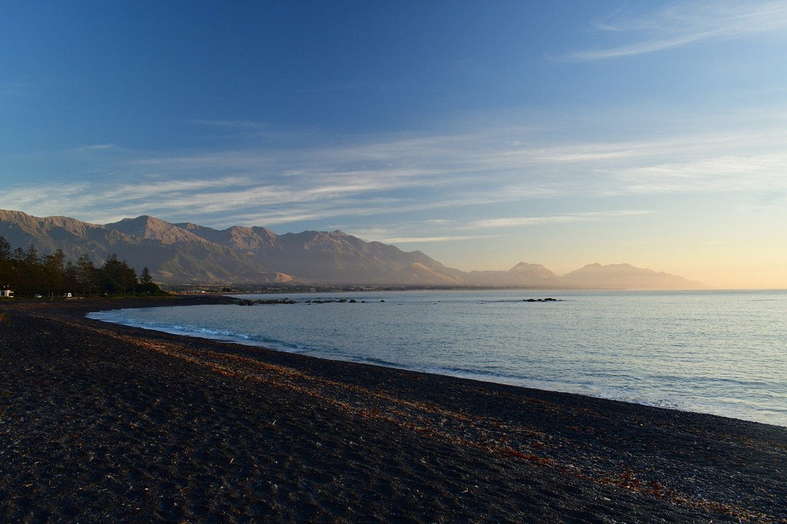
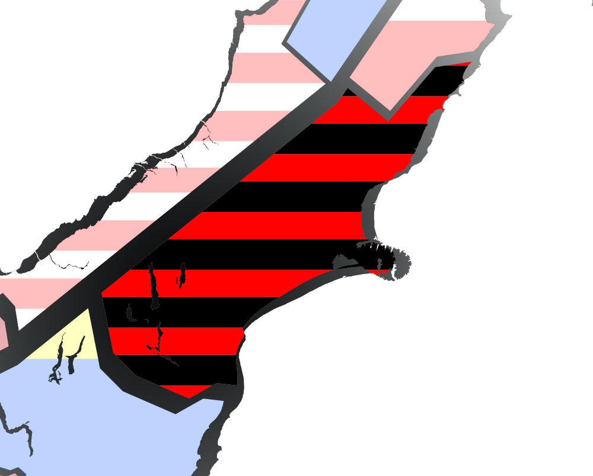
Canterbury makes up the central east coast of the South Island — bordered by mountains on three sides and the Pacific Ocean to the east. Though the region includes some of the country's most famous ski fields, the province is largely flat.
Iconic Landscapes
The Tekapō Basin in the Mackenzie Country, the Canterbury Plains, and the flat grid-like city of Christchurch are some of New Zealand's most recognisable landscapes. In the north-west, Hanmer Springs is a small resort town built around hot mineral springs.
Kaikoura — The True Gem
The little seaside town of Kaikoura is the true gem of the province. Its economy is completely based on eco-tourism — whale watching and dolphin experience tours make it one of the most unique destinations in the country.
▸ Phar Lap — the much-loved racehorse, a Canterbury connection
▸ Richard Pearse — the pioneer aviator
▸ Kate Sheppard — the women's suffragette
▸ The very French town of Akaroa — a reminder of how close France came to claiming New Zealand
South Island — Central Otago
Lakes District (Otago)
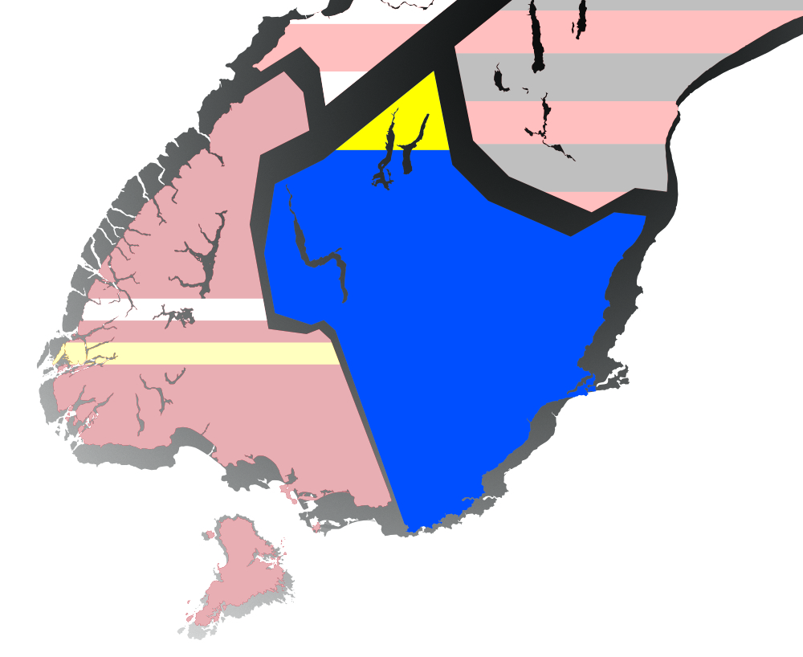
Lakes District is part of the larger Otago province — usually referred to as Central Otago or just 'Central.' This region is the envy of most other tourism regions in New Zealand, with more activities on offer than just about anywhere else in the country.
Queenstown & Wanaka
The two largest towns in the area house some of the most well-known adventure operators and landmarks in the country. Bungy jumping, skydiving, jetboating, skiing, wine tasting — the list is extraordinary.
The region has a fascinating history — from gold rush to tourist rush. High country stations, fruit growing evolving into winemaking, and the stunning seasonal displays of imported poplars lining the roads near Cromwell.
The Horizon
Massive mountains to the north and west, equally massive hills to the east and south — equates to high dramatic horizons wherever you look. The landscape here is genuinely like nowhere else.
South Island — South East
Otago
O — place of. Takau — Māori god, son of Ranginui and Papatūānuku. A mispronunciation of Otakau.
With Dunedin as its capital and coastal centre, the province extends wedge-like westward to the West Coast boundary. Historically famous for its gold rushes that followed the natural valleys westward, the province is now largely known for sheep — particularly Merino, a tough breed producing wool that doesn't itch.
The Southern Man
The big hills produce big stories — and from those stories the 'Southern Man' was born. A man who rides horses, musters from the high country, says little, works hard and is tough. A locally produced beer has famously used this icon in its advertising, cementing the Southern Man as a cultural symbol.
▸ New Zealand's coldest recorded temperature — −25.6°C at Ranfurly
▸ Hoar frosts are a stunning and common sight during winter
South Island — Far South
Southland
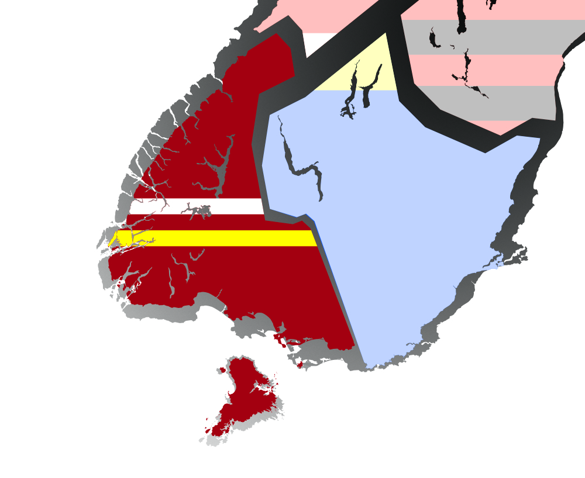
The southernmost province is home to New Zealand's southernmost city and largest electricity generation project. Geographically walled to the west with massive mountains and large hills to the north and east, leaving the centre relatively flat. Inside Fiordland National Park some of New Zealand's most precious flora and fauna live.
On the flat lands, huge dairy herds graze — pushing sheep further up into the high country too steep for cows.
The Original Kiwi Accent
The most interesting thing about Southland is the unique rolling 'r' accent of true Southlanders. It only comes out in certain words — purple, girl — and though Southlanders are both proud and a little embarrassed by it, it is the true original New Zealand accent, softened everywhere else by waves of immigration.
Where It Came From
Wealthier English descendants lived among Scottish, Welsh and working-class English who schooled and nannied their children. The accents rubbed off on those children — gifting the first generation of New Zealanders with the rolling 'r'. The rest of the country lost it. Southland kept it.